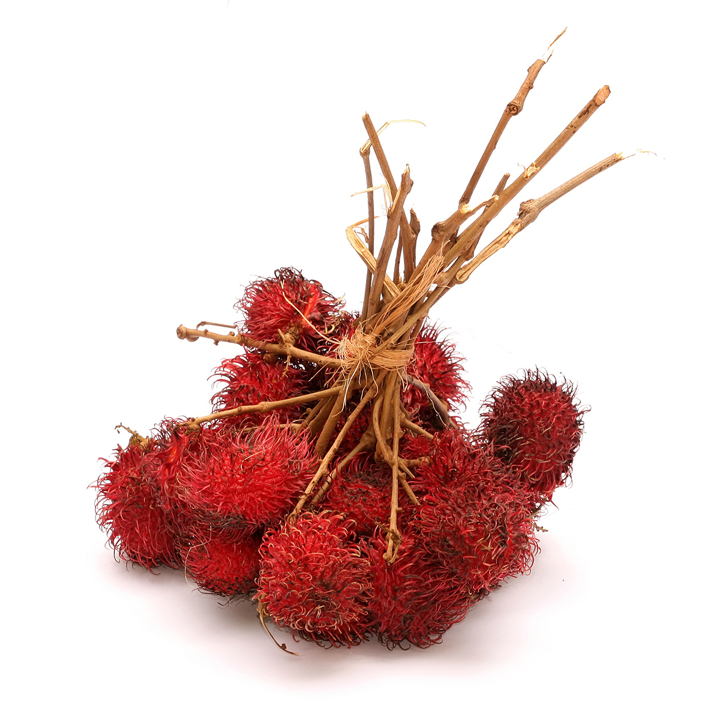

A species is the most specific level of classification used on this website.
It describes one distinct kind of plant that can be told apart from its
relatives and has its own two-part scientific name. The first part is the
genus and the second part identifies the species, so Ficus variegata
is the species variegata inside the genus Ficus.
This page introduces the sixteen species in our collection, grouped by family
and genus. Each card gives the common name and a short description based on
published botanical sources. Use the Family and Genus buttons on a card to go
back up to the larger groups the plant belongs to.
Sapindaceae
Genus Nephelium

Figure 1: Rambutan fruits.
Nephelium lappaceum
Rambutan · Family: Sapindaceae
The well-known rambutan, whose fruit is covered in long, thread-like spines and has an edible fleshy coat around the seed. Its exact original range is hard to trace because cultivated trees have escaped into the wild, but it grows across Borneo and Southeast Asia. In Sarawak the Kenyah people call it buah abong.
Pulasan (meritam in Sabah and Sarawak) · Family: Sapindaceae
A close relative of the rambutan that can look very similar, but its fruit carries short, stubby spines instead of long thread-like ones. It is a tree up to about 24 m tall and is both wild and cultivated across Southeast Asia, including Borneo.
A shrub or small tree up to 10 m tall that grows in thickets at low elevations. Its berries ripen from dark red to black, and the seeds are eaten roasted. It occurs across the Malay Archipelago and parts of mainland Southeast Asia.
A tree up to 10 m tall with leaves made of 8 to 12 leaflets. It bears round, purple berries about 2.5 cm wide that are edible. It grows in forests up to about 500 m and is found in Borneo, Peninsular Malaysia, Java and the Philippines.
A slipper orchid found only in Sarawak, where it grows on limestone cliffs between about 60 and 700 m. Its flowers can reach 12 cm across, with white sepals lined in maroon and yellow petals spotted maroon. It is assessed as critically endangered because of over-collecting and habitat loss.
Famous for petals that can grow to about a metre long. It is found only around Gunung Mulu in north-western Borneo, on steep limestone and dolomite pinnacles. The wild population is protected inside Gunung Mulu National Park, and the species is critically endangered.
An epiphyte endemic to Borneo, named for its huge hanging leaves, which can exceed 60 cm and are the largest in the genus. It grows in lowland and hill forest up to about 400 m. The fleshy, star-shaped flowers are cream with brown spots and strongly scented.
A small orchid from Peninsular Malaysia and Borneo that grows on trees or on rocks. Its waxy leaves are up to about 21 cm long, and its small flowers are off-white with reddish-brown bars. The name maculata means spotted and refers to the colouring of the flowers.
A stemless understorey palm found only in south-western Sarawak. Its leaf is a single, pleated, almost perfect circle. Local people have used the leaves as temporary umbrellas, and the plant is also grown as an ornamental.
A small, stemless fan palm from the rainforest understorey of Sarawak. It is known mainly to specialist palm collectors, and little detailed scientific information about it has been published.
A slender rattan with a strong, durable cane and a smooth, golden surface. Its cane is used for baskets, mats, handicrafts and cordage, and it is especially good for fine rattan carpets. It is collected from the wild and has also been grown by smallholders for about a century.
A robust, single-stemmed climbing rattan whose cane can reach about 8 cm across, and it is regarded as the finest large-diameter furniture cane. It grows on steep slopes of hill forest. Heavy harvesting from the wild has caused its populations to decline.
An evergreen tree up to 25 m tall that is native to Borneo. In Sarawak its fruit is one of the most highly esteemed local fruits, known as pingan to the Iban, and it ripens mostly between October and January. Wild trees are common in secondary forest up to about 1,000 m.
A tall tree of up to 40 m with buttressed roots and white latex, found only on Borneo in lowland and hill forest up to about 600 m. Its bark fibre is made into barkcloth and its timber is traded as terap. It is assessed as vulnerable.
An evergreen tree or shrub with drooping branchlets and glossy, oval leaves 6 to 13 cm long. It is native to the forests of South and Southeast Asia and northern Australia, and may begin life as a strangler before growing into a large tree. Its figs feed birds and bats.
One of Borneo's most common figs, a tree up to 40 m tall with a straight white trunk and large buttresses. Its figs grow in clusters directly on the trunk and ripen from green to pink or red. Orangutans, gibbons, macaques and fruit bats eat them.